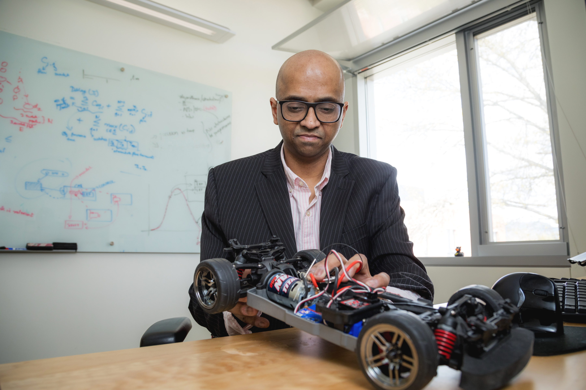
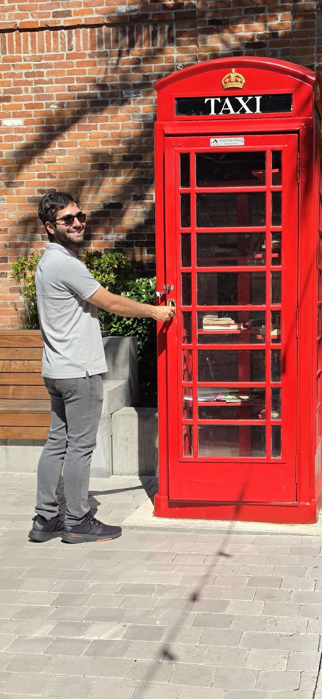
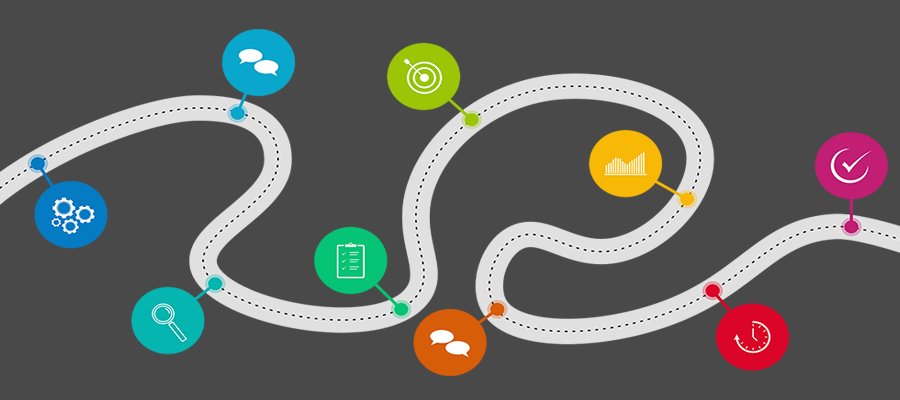

# administrivia ## **operating systems** ### csci 3411 ### Prof. **Sibin Mohan** --- ## class schedule ||| |--------|--------| |days | <scb>tuesdays</scb> and <scb>thursdays</scb> | |times | <scb>12:45 -- 2:00 PM</scb> | |location | <scb>MON 111</scb> | || -v- ## lab sections ||| |--------|--------| |thursdays| <scb>2:10 -- 4:00 PM</scb> <br> <scb>6:10 -- 8:00 PM</scb> | |location| <scb>SEH 4040</scb>| || -v- ## lab sections ||| |--------|--------| |tuesdays| <scb>2:30 -- 3:20 PM</scb> | |location| <scb>SEH 4040</scb>| || - these are **required** -v- ## lab sections ||| |--------|--------| |tuesdays| <scb>2:30 -- 3:20 PM</scb> | |location| <scb>SEH 4040</scb>| || - these are **required** - you will learn useful concepts -v- ## lab sections ||| |--------|--------| |tuesdays| <scb>2:30 -- 3:20 PM</scb> | |location| <scb>SEH 4040</scb>| || - these are **required** - you will learn useful concepts - hands-on experience - assistance from teaching staff --- ## course staff -v- ## instructor ||| |------------------------------------------------|--------| | **Prof. Sibin Mohan** <br> * associate professor <br> * computer science <br> * security, systems <br> * photography, travel <br> | <p></p>| || **sibin.mohan\@gwu.edu** -v- #### course staff [**GTAs**] ||| |-----|-----| |<center> <br> Yuan <br><font size="5vw">**ygao1\@gwmail.gwu.edu**</font>|<center><p></p> <br> Faris <br><font size="5vw">**fjiwad\@gwmail.gwu.edu**</font>| || -v- #### course staff [contd.] |UTA|LA| |:-----:|:-----:| |<center> <br> Anand<br><font size="5vw">**anand.bhat\@gwmail.gwu.edu**</font>|<center> <br> Calum<br><font size="5vw">**calum.wilson\@gwmail.gwu.edu**</font>| || --- ## office hours |person|day of week|time(s)| |------|-----------|-------| |Sibin |Wednesdays| <scb>11 AM -- 12 PM</scb>| |TAs/LA|see class calendar| || -v- ## communication - **discord** - email for sickness/absence/_etc._ -v- <center><div class="center" data-id="box" style="height: 75px; width: 700px; background: orange;"> <b>respect</b> everyone's time! </div></center> -v- ### office hours **etiquette** - read: [**<scb>how to prepare for office hours</scb>**](https://www2.seas.gwu.edu/~gparmer/resources/2021-09-20-Office-Hours-HOWTO.html)! - be respectful → to TA and other students - **come prepared!** -v- ### discord **etiquette** * **do not DM the teaching staff (on discord)** *<!-- .element: class="fragment" data-fragment-index="1" --> * no guarantee for immediate response <!-- .element: class="fragment" data-fragment-index="2" --> * response times → (approx.) 24 hours <!-- .element: class="fragment" data-fragment-index="3" --> [\* send me DMs if critical; absences via email only]<!-- .element: class="fragment" data-fragment-index="4" --> -v- ### who to contact for what | professor | | |-----------|-----| |conceptual questions <br> lecture materials <br> facing any problems <br> grade issues|| || -v- ### who to contact for what | professor | TAs | |-----------|-----| |conceptual questions <br> lecture materials <br> facing any problems <br> grade issues| homeworks <br> labs <br> machine setup <br> github issues, etc.| || --- ## course content --- ## course content by the end of this course, you will understand, --- ## course content by the end of this course, you will understand, - key concepts → resource management, organization, abstraction --- ## course content by the end of this course, you will understand, - key concepts → resource management, organization, abstraction - how an OS manages and interfaces with hardware --- ## course content by the end of this course, you will understand, - key concepts → resource management, organization, abstraction - how an OS manages and interfaces with hardware - fundamental trade-offs integral to system design --- ## course content by the end of this course, you will understand, - key concepts → resource management, organization, abstraction - how an OS manages and interfaces with hardware - fundamental trade-offs integral to system design - both development and experimentation in a real OS --- ## course content we will cover specific topics related to... - OS structure - processes and thread management - communication with peripherals (I/O) - synchronization \& deadlocks - memory management - virtual machines - cloud infrastructures - abstractions for cloud computation --- ## course structure <p></p> --- - **lectures** → concepts, deep dives into topics - **lab** sections → exploration of singular topics - **homework assignments** → hands-on exercises --- well-defined learning sequence: <br> ### lectures → labs → mp --- ## lectures - concepts - **participation points** [<scb>10%</scb>] - will call on **random** person → using script - slides posted **after** class --- ## lectures | videos - asynchronous video lectures - small set of videos* → watch **ahead of time**! [*we will track using google form!] --- ## homeworks demonstrate ability to **apply** knowledge --- ## homeworks demonstrate ability to **apply** knowledge |hw| details |individual?| |--|---------|-----------| | <sc>hw0</sc> | github+reading | individual | | <sc>hw1</sc> | <sc>C</sc> refresher | individual | | <sc>hw2</sc>--<sc>hw5</sc> | <sc>xv6<sc> hacking | **buddy** | | <sc>project</sc> | <sc>xv6<sc> hacking <br> > **1 month**! | group of **4**| || --- ## homeworks |||| |--------|--------|-----| | due | **fridays**, **6 PM** ET* | full credit | | early | **tuesdays**, **6 PM** ET* | <scb>+15</scb> points | | resubmissions | **one week** | <scb>+50%</scb> of **difference**+^ | || [* unless otherwise announced]<br> [+^ see class website for details/examples] --- ## homeworks |||| |--------|--------|-----| | due | **fridays**, **6 PM** ET* | full credit | | early | **tuesdays**, **6 PM** ET* | <scb>+15</scb> points | | resubmissions | **one week** | <scb>+50%</scb> of **difference**+^ | || [* unless otherwise announced]<br> [+^ see class website for details/examples] <br> <center><div class="center" data-id="box" style="height: 75px; width: 600px; background: orange;"> <b>no late submissions!</b> </div></center> --- ## grading rubric | Component | % Grade | |------------|---------| | homework/project | 60 % | | exams/quizzes | 30 % | | class participation | 10 % | || -v- ### homeworks grading - script-based grading <!-- .element: class="fragment" data-fragment-index="1" --> - negative points → not following exact instructions <!-- .element: class="fragment" data-fragment-index="3" --> -v- ### homeworks grading - script-based grading - negative points → not following exact instructions <br> <br> submit server/autolab:<br> <scb>https://submit.cs.seas.gwu.edu/</scb> -v- ### homeworks grading (contd.) - you may be **randomly** chosen for → **oral q&a** - failure → loss of homework grade! <!-- .element: class="fragment" data-fragment-index="1" --> -v- ### project grading - there will be a **demo** for final project - q&a with Sibin -v- <center><div class="center" data-id="box" style="height: 75px; width: 1050px; background: orange;"> <b>do not</b> talk to TAs/LAs about grades! </div></center> **only** with professor --- ## labs boot you up to be able to accomplish the homeworks! --- ## labs boot you up to be able to accomplish the homeworks! - **mandatory** - reserve the right to take attendance at any time --- ## exams/quizzes - midterm - final (not decided, _yet_) - reserve right to in-class quizzes → if needed --- ## academic honesty --- ## academic honesty | don't | | |---------|--------| | copy/share code | | | look at others' code!* | | || --- ## academic honesty | don't | do | |---------|--------| | copy/share code | discuss with others | | look at others' code!* | ask prof/ta | || --- ## academic honesty | don't | do | |---------|--------| | copy/share code | discuss with others | | look at others' code!* | ask prof/ta | || [*except for **buddy** system for homeworks <sc>2</sc> through <sc>5</sc>] --- ## academic honesty | don't | do | |---------|--------| | copy/share code | discuss with others | | look at others' code! | ask prof/ta | || <br> <center><div class="center" data-id="box" style="height: 75px; width: 850px; background: orange;"> <b>do not</b> use chatgpt, copilot, etc.! </div></center> --- ## violations <font style="background-color:orange;"> <b>will be reported</b> </font> to the academic integrity office! --- ## course resources | resource | use | |---------|--------| | course **website** | [**link**](https://gwu-cs-os.github.io) | | **discord** server | announcements/discussions| | **blackboard** | announcements/grades | | **github** | homeworks/project/labs| || --- ## class website - please read through **all** policies - critical information about, - grading - collaboration/group work/buddy system - academic honesty - **critical resources** --- ### success in 3411 --- ### success in 3411 - no one fails 3411 - **unless you cheat** - or don’t do the work --- ### success in 3411 - no one fails 3411 - **unless you cheat** - or don’t do the work - **not** an easy class - historical grade average → <scb>~B+</scb> --- ### success in 3411 - no one fails 3411 - **unless you cheat** - or don’t do the work - **not** an easy class - historical grade average → <scb>~B+</scb> - designed to make you competitive - put in the work → investment in future --- ## **immediate** to-dos |\#|to-do| |-----|------| |1 | join class **discord** | |2 | fill out **google form** | |3 | finish <scb>hw0</scb> → due <sc>Sept. 1</sc> <br> [create github ID _if_ required]| |4 | set up <scb>xv6</scb> on your system | ||